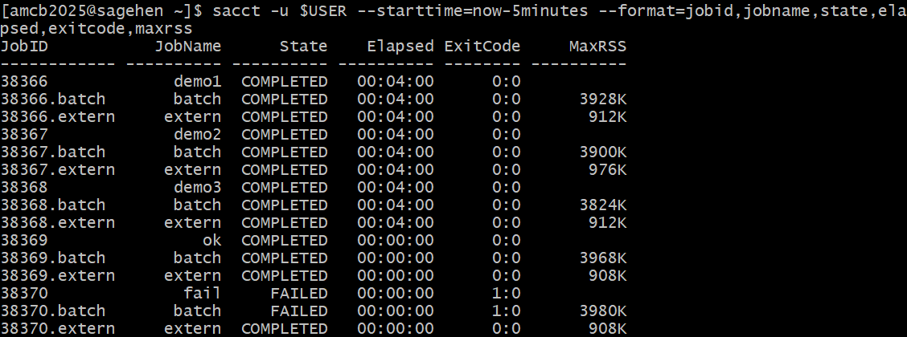

All in One View
Content from Introduction to SLURM
Last updated on 2026-08-24 | Edit this page
Overview
Questions
- What is a job scheduler and why do we need one?
- What is SLURM?
- Why can’t I just run jobs on the head node?
Objectives
- Understand the purpose of job schedulers in shared computing environments
- Learn the basic architecture of Sagehen
- Distinguish between head nodes and compute nodes
- Understand the SLURM job lifecycle
What is a Job Scheduler?
When multiple researchers share a computing cluster, a job scheduler coordinates access:
- Manages resources – tracks CPU, memory, and GPU availability
- Queues jobs – accepts requests and holds them until resources are free
- Allocates resources – assigns specific compute nodes to jobs
- Ensures fairness – prevents any one user from monopolizing the cluster
- Enforces policies – implements time limits, quotas, and priority rules
Without a scheduler, researchers would need to manually coordinate who runs what and when.
SLURM: Simple Linux Utility for Resource Management
SLURM is the job scheduler used on Sagehen. It is one of the most widely deployed schedulers in HPC, running on thousands of clusters worldwide.
The Sagehen Cluster Architecture
Head Node
- Address: sagehen.hpc.pomona.edu
- CPU: 2 threads; RAM: 8 GB
- Purpose: Login, submit jobs, manage files
The Head Node is Sacred
The head node has only 2 CPU threads and 8 GB of RAM. Running compute jobs there will crash the login server, kill other users’ jobs, and result in account restrictions. Always submit jobs to compute nodes via SLURM.
Compute Nodes
| Partition | Specs | Max Time | Best For |
|---|---|---|---|
| amd | See sinfo -p amd for current configuration |
30 days | General compute |
| gpu | 10 GPUs across multiple nodes (4× A100, 4× L40S, 2× RTX PRO 6000; see Workshop 16) | 30 days | ML, GPU-accelerated work |
| short | See sinfo -p short for current configuration |
Shorter max walltime than amd/gpu | Quick test jobs, debugging, rapid prototyping |
The SLURM Job Lifecycle
-
Submission: You run
sbatch(batch) orsrun(interactive) on the head node - Queue: SLURM accepts your job and places it in a queue
- Waiting: SLURM waits for available resources and priority scheduling
- Allocation: SLURM assigns specific compute nodes
- Execution: Your job runs on those nodes
- Completion: Output is written to files; nodes are freed
SLURM Command Overview
| Command | Purpose |
|---|---|
srun |
Start an interactive job |
sbatch |
Submit a batch script |
squeue |
View jobs in the queue |
scancel |
Cancel a job |
sacct |
View job history |
seff |
Analyze job efficiency |
sinfo |
View cluster status |
Challenge 1: Exploring Sagehen
You should see sagehen from hostname,
2 from nproc, and ~8 GB from
free -h. The sinfo output shows the
amd, gpu, and short partitions
with their node counts and time limits.
- A job scheduler coordinates resource sharing on a cluster
- SLURM is the job scheduler on Sagehen
- The head node (2 CPUs, 8 GB RAM) is for login and job submission only
- Jobs run on compute nodes in three partitions:
amd(general compute),gpu(GPU-accelerated), andshort(quick test/debug jobs) - SLURM enforces fair access through queuing, resource limits, and priorities
Content from Partitions and Resources
Last updated on 2026-08-24 | Edit this page
Overview
Questions
- What partitions are available on Sagehen?
- How do I choose the right partition for my job?
- What GPU types are available?
Objectives
- Understand the characteristics and use cases for each Sagehen partition
- Match job requirements to the appropriate partition
- Know the available GPU types and their strengths
The “amd” Partition (General Compute)
The workhorse of Sagehen, suitable for most research computing.
For the current node count, CPU count, and RAM configuration, run
sinfo -p amd on Sagehen.
| Property | Value |
|---|---|
| Configuration | See sinfo -p amd for current details |
| Max job time | 720 hours (30 days) |
Use cases: Statistical analysis, bioinformatics, physics simulations, data processing, batch processing.
The “gpu” Partition (GPU Acceleration)
For workloads requiring GPU acceleration.
| Property | Value |
|---|---|
| Nodes | Multiple GPU-equipped nodes |
| CPUs per node | 128 cores, 500 GB RAM |
| Max job time | 720 hours (30 days) |
Available GPU Types
Sagehen has 10 GPUs total (confirmed May 2026):
| GPU Type | Memory | Quantity | Best For |
|---|---|---|---|
| NVIDIA A100 | 80 GB HBM2e | 4 | Large models, production AI |
| NVIDIA L40S | 48 GB GDDR6 | 4 | Deep learning, inference |
| NVIDIA RTX PRO 6000 | 96 GB GDDR7 ECC | 2 | Largest memory on the cluster |
Check availability:
sinfo -p gpu --Format=NodeList,Gres,GresUsed
The “short” Partition (Quick Jobs and Debugging)
For short-duration test jobs, debugging, and rapid prototyping. The
short partition has a shorter maximum walltime than
amd and gpu, but jobs typically start more
quickly because the scheduler can back-fill them between longer
jobs.
| Property | Value |
|---|---|
| Configuration | See sinfo -p short for current details |
| Max job time | Shorter than amd/gpu — verify with sinfo -p short
|
Use cases: Quick test of a new submission script, single-task debugging, short interactive sessions, sanity-checking a workflow before launching a 30-day production run.
Example: a quick test job on the short
partition
BASH
#!/bin/bash
#SBATCH --job-name=script_test
#SBATCH --partition=short
#SBATCH --time=00:15:00
#SBATCH --ntasks=1
#SBATCH --cpus-per-task=2
#SBATCH --mem=4G
#SBATCH --output=test_%j.log
module purge
module load miniconda3
python my_script.py --dry-runIf the test succeeds, you can change --partition=short
to --partition=amd (and increase --time) for
the production run.
Choosing the Right Partition
-
Need GPU acceleration? ->
gpupartition -
Quick test, debug, or short prototype run (within
shortwalltime limit)? ->shortpartition -
Everything else (production CPU work) ->
amdpartition
Account and Group Limits
Each account has resource limits to ensure fair sharing:
| Limit | Details |
|---|---|
| Max cores per account | Per-account limits apply |
| Max GPUs per account | Per-account limits apply |
| Max submitted jobs | Per-account limits apply |
Check your group’s quota with quota_check.sh. Contact its-hpc@pomona.edu
for current limits or temporary increases.
Challenge 1: Matching Jobs to Partitions
For each scenario, decide which partition to use:
- Testing a new analysis script (takes about 30 seconds)
- Analyzing a 1 TB dataset, expected to take 6 hours
- Training a deep learning model, expected to take 18 hours
- Running a molecular dynamics simulation for 72 hours
-
short – Quick test (~30 seconds) is the canonical
use case for the
shortpartition - amd – General compute, no GPU needed; 6 hours fits within amd’s 30-day limit
- gpu – Deep learning needs GPU acceleration
- amd – Long simulation (72 hours), no GPU needed, fits 30-day amd limit
- Sagehen has three partitions:
amd(general compute),gpu(accelerators), andshort(quick / test / debug jobs) - Choose partition based on GPU need and job duration
- GPU partition offers A100 (production), L40S (inference), and RTX PRO 6000 (large-memory training)
- Per-account resource limits apply; check with
quota_check.sh -
amdandgpusupport up to 720 hours (30 days);shorthas a shorter walltime — checksinfo -p short
Content from Requesting Resources
Last updated on 2026-08-24 | Edit this page
Overview
Questions
- How do I specify CPU, memory, time, and GPU resources in SLURM?
- How do I estimate what resources my job needs?
- What storage options are available during a job?
Objectives
- Master SLURM resource request syntax for CPU, memory, time, and GPUs
- Learn how to estimate resource needs for different workloads
- Understand storage options available during jobs
SLURM Resource Request Keywords
CPU and Memory
| Parameter | Meaning | Example |
|---|---|---|
-c / --cpus-per-task
|
CPU cores per task | -c 4 |
-N / --nodes
|
Number of nodes | -N 1 |
--mem |
RAM per node | --mem=50G |
--mem-per-cpu |
RAM per CPU core | --mem-per-cpu=4G |
Time
| Parameter | Example | Meaning |
|---|---|---|
-t / --time
|
-t 00:30:00 |
30 minutes |
-t 1-12:00:00 |
1 day 12 hours | |
-t 1440 |
1440 minutes (1 day) |
Estimating Resource Needs
CPU Cores
- Is your code multi-threaded? Check if it uses OpenMP, multiprocessing, etc.
- How many threads does it spawn?
- Rule of thumb: Start with 4 cores. Double if too slow.
Memory
- How big are your input datasets?
- Does the algorithm create temporary copies?
- Rule of thumb: Request 2-4x the size of your largest input file.
Common Resource Request Patterns
Storage During Jobs
| Storage | Speed | Persistence | Use For |
|---|---|---|---|
/rhome |
Medium | Persistent | Source code, results |
/bigdata |
Medium | Persistent | Shared datasets |
/scratch/$SLURM_JOB_USER/$SLURM_JOB_ID |
Fast (SSD) | Deleted when job completes | Working files |
/tmpfs |
Very fast (RAM) | Deleted when job ends | Hot data |
Challenge 1: Resource Estimation
Estimate the resources needed for these jobs:
- Processing a 10 GB CSV file with pandas (under 1 hour)
- Training a ResNet-50 model on ImageNet (24 hours on a single GPU)
- Compiling a large C++ codebase with 16 parallel jobs
-
10 GB CSV:
-c 4 --mem=50G -t 01:00:00 -p amd(4 cores, 5x file size for memory) -
ResNet-50:
--gres=gpu:a100:1 -c 8 --mem=64G -t 24:00:00 -p gpu -
C++ compilation:
-c 16 --mem=32G -t 00:30:00 -p short(parallel make with-j16; short walltime fits theshortpartition)
Start conservative and adjust based on actual usage from
seff.
- Resource requests use SLURM flags:
-c(cores),--mem(memory),-t(time),--gres=gpu(GPUs) - Start conservative with estimates; monitor actual usage with
seffand adjust - Time format: HH:MM:SS or D-HH:MM:SS for longer jobs
- Use
/scratchfor fast temporary I/O during jobs; use/rhomeor/bigdatafor persistent results - Over-requesting wastes resources and makes other users wait longer
Content from Interactive Jobs
Last updated on 2026-08-24 | Edit this page
Overview
Questions
- How do I get an interactive shell on a compute node?
- How do I request resources for an interactive session?
- When should I use interactive vs batch jobs?
Objectives
- Master
srun --pty bashfor interactive sessions - Request CPU, memory, and GPU resources for interactive jobs
- Use interactive sessions for development and debugging
- Know when to switch to batch jobs
The srun Command
srun starts interactive jobs. The most common form for a
short interactive debugging session:
-
-c 4: 4 CPU cores -
--mem=16G: 16 GB RAM -
-t 00:30:00: 30 minutes -
-p short:shortpartition (good for short interactive work; for sessions longer than theshortwalltime limit, use-p amd) -
--pty bash -l: interactive login shell
After SLURM allocates resources, your prompt changes to show the compute node:
[user@compute-node ~]$Type exit or Ctrl+D to end the session and free
resources.
Common Interactive Patterns
Working in Interactive Sessions
Load modules and run code just like on your laptop:
Edit and rerun for iterative development:
When to Use Interactive vs Batch
Interactive: developing code, debugging, exploring data, quick tests
Batch: stable code, jobs over 2 hours, many parallel jobs, unattended runs
Challenge 1: Your First Interactive Session
Start a session:
srun -c 2 --mem=8G -t 00:10:00 -p short --pty bash -l-
Verify you are on a compute node:
-
Load Python and run a quick test:
Exit:
exitConfirm you are back on the head node:
hostname
Inside the session, hostname shows a compute node (e.g.,
a005), free -h shows 500 GB total RAM, and
nproc shows 128 cores. After exit,
hostname returns sagehen. The Python test
confirms modules work on compute nodes.
- Use
srun --pty bash -lfor interactive sessions on compute nodes - Request resources:
-c(cores),--mem(RAM),-t(time),-p(partition) - Interactive jobs are best for development, testing, and debugging
- Use the
shortpartition for short interactive sessions and quick debugging; useamdfor longer interactive work - Use tmux inside sessions for connection resilience
- Switch to batch jobs when code is stable and needs long or unattended runs
Content from Writing Batch Scripts
Last updated on 2026-08-24 | Edit this page
Overview
Questions
- What is a batch script and how is it structured?
- What are the essential SBATCH directives?
- How do I load modules and run code in batch scripts?
Objectives
- Write complete SLURM batch scripts
- Use SBATCH directives to request resources
- Load modules and configure environments in scripts
- Understand SLURM environment variables available in jobs
Why Batch Jobs?
Batch jobs run unattended while you do other things. They are the backbone of research computing:
- Run long jobs (hours, days, weeks)
- Submit many jobs at once
- Reproducible: exact commands saved in the script
- Run overnight or over weekends
- Get email notifications when done
Anatomy of a Batch Script
BASH
#!/bin/bash -l
#SBATCH --job-name=my_job
#SBATCH --nodes=1
#SBATCH --cpus-per-task=4
#SBATCH --mem=16G
#SBATCH --time=00:30:00
#SBATCH --partition=amd
#SBATCH --output=slurm-%j.out
#SBATCH --error=slurm-%j.err
module load miniconda3
python my_analysis.pySBATCH Directives
| Directive | Meaning | Example |
|---|---|---|
--job-name |
Name shown in squeue | --job-name=analysis_v1 |
--cpus-per-task |
CPU cores | --cpus-per-task=8 |
--mem |
Total RAM | --mem=32G |
--time |
Max job time | --time=04:00:00 |
--partition |
Partition | --partition=amd |
--output |
stdout file (%j = job ID) |
--output=job_%j.out |
--error |
stderr file | --error=job_%j.err |
--gres |
GPUs | --gres=gpu:2 |
--mail-user |
Email address | --mail-user=me@pomona.edu |
--mail-type |
When to email | --mail-type=END,FAIL |
Example Batch Scripts
R Statistical Analysis (short test run)
BASH
#!/bin/bash -l
#SBATCH --job-name=stats
#SBATCH --cpus-per-task=2
#SBATCH --mem=8G
#SBATCH --time=00:30:00
#SBATCH --partition=short
#SBATCH --output=r_analysis_%j.out
module load r/4.5.1
Rscript analysis.RQuick R analyses with a short walltime are a good fit for the
short partition. For longer R jobs, change
--partition=short to --partition=amd.
Best Practices
Use Scratch for I/O
BASH
cp /rhome/$USER/large_input.dat /scratch/$SLURM_JOB_USER/$SLURM_JOB_ID/
cd /scratch/$SLURM_JOB_USER/$SLURM_JOB_ID/
python process.py
cp output.csv /rhome/$USER/results/Challenge 1: Write a Batch Script
Create simple_job.sh that:
- Uses the
shortpartition with 1 core and 1 GB RAM for 5 minutes - Prints the hostname, job ID, and current date
- Sleeps for 10 seconds
- Prints “Job complete!”
BASH
#!/bin/bash -l
#SBATCH --job-name=hello_world
#SBATCH --cpus-per-task=1
#SBATCH --mem=1G
#SBATCH --time=00:05:00
#SBATCH --partition=short
#SBATCH --output=hello_%j.out
echo "Hello from Sagehen!"
echo "Job ID: $SLURM_JOB_ID"
echo "Running on: $(hostname)"
sleep 10
echo "Job complete!"Save this file and make it executable with
chmod +x simple_job.sh.
The script includes all required SBATCH directives and uses SLURM
environment variables. The %j in the output filename
ensures each run creates a unique file. The sleep 10
simulates actual computation.
- Batch scripts are bash scripts with
#SBATCHdirectives for resource requests - First line must be
#!/bin/bash -l(the-lflag loads your environment) - Key directives:
--job-name,--cpus-per-task,--mem,--time,--partition,--output - Always load modules inside the script, not just interactively
- Use
set -eto stop on first error - Include logging (date, hostname, job ID) for debugging
- Use scratch storage for I/O-intensive intermediate files
Content from Batch Job Submission
Last updated on 2026-08-24 | Edit this page
Overview
Questions
- How do I submit a batch job?
- How do I check job status and progress?
- Where are my job results, and how do I follow them in real time?
- How do I get email notifications without spamming myself?
Objectives
- Submit jobs with
sbatchand verify submission - Read SLURM status codes and find the cause of pending jobs
- Locate and view output files during and after a run
- Configure email notifications appropriately for the job size
- Recognize and avoid the most common submission mistakes
Why Batch Submission Is the Right Default
The shell prompt on the Sagehen login node is convenient but not where your real work belongs. Login nodes are shared and intentionally constrained: a long calculation on the login node steals resources from every other user trying to edit, transfer, or schedule. Batch submission moves your work to the compute partition where SLURM can give it dedicated CPU, memory, and time, and where your job survives if you close your laptop.
The pattern is consistent: you write a short shell script that
includes both SLURM directives (lines starting with
#SBATCH) and the commands to run, then submit it with
sbatch. SLURM puts the job in queue, runs it when resources
are available, and writes its stdout and stderr to files in your current
directory.
Submitting with sbatch
SLURM responds immediately:
Submitted batch job 12345Your job ID is 12345. Use this number to track and manage the job. The submitting shell can close, your laptop can sleep, you can disconnect from the VPN, and the job continues to run.
Checking Job Status
BASH
# All your jobs
squeue -u $USER
# A specific job
squeue -j 12345
# Estimated start time for pending jobs
squeue -u $USER --startOutput:
JOBID PARTITION NAME USER ST TIME NODES CPUS
12345 amd analysis alice R 0:23 1 4Status codes:
-
RRunning: actively executing -
PDPending: waiting for resources, see the REASON field for why -
CGCompleting: cleanup phase, almost done -
CDCompleted: finished successfully -
FFailed: ended with non-zero exit code -
CACancelled: stopped via scancel -
TOTimeout: exceeded--timelimit and was killed
Decoding “why is my job pending?”
squeue -u $USER shows a (REASON) column for
pending jobs:
(Resources): waiting for matching nodes to become
available. Normal for busy partitions; just wait.
(Priority): jobs with higher priority are ahead. This is
fair-share doing its job.
(QOSMaxJobsPerUserLimit): you have hit a per-user
concurrency cap. Wait for one of yours to finish.
(ReqNodeNotAvail): the constraint you set (e.g., a
specific GPU type) currently has no available node. May take a long
time.
(Dependency): job is waiting for another job to complete
(--dependency=afterok:JOBID).
Output Files
By default, SLURM writes a single combined log to
slurm-JOBID.out in the directory where you submitted. For
most workflows, separating stdout and stderr is more useful:
The %j placeholder is replaced by the job ID. Other
useful placeholders: %x for job name, %a for
array task ID, %N for node name. A common pattern that puts
logs in their own folder:
Make sure logs/ exists before submitting. SLURM will
fail to start the job if the output path is invalid.
Viewing Output
BASH
# While running (real-time)
tail -f analysis_12345.out
# After completion
cat analysis_12345.out
# Last 50 lines (useful for long jobs)
tail -50 analysis_12345.out
# Search for a specific string
grep -i error analysis_12345.outYou can also specify a full path so logs land somewhere predictable:
Email Notifications
BASH
#SBATCH --mail-user=alice@pomona.edu
#SBATCH --mail-type=END # When finished
#SBATCH --mail-type=FAIL # On failure
#SBATCH --mail-type=ALL # Any state change (verbose)Email Best Practices
For testing and short jobs: no email at all. Watch with
squeue instead.
For medium jobs (hours): FAIL only. You will be notified
about problems but not flooded with completion notices.
For long important jobs (days): END,FAIL. You want to
know either way, but only once.
For job arrays: FAIL only. Otherwise a 100-task array
sends 100 completion emails.
The BEGIN mail-type exists but is almost never useful:
by the time the email arrives, your job has already started.
Changing Directory
By default, scripts run in the directory where you submitted. If your
submitted script is in /rhome/alice/scripts/ but your data
is in /rhome/alice/project/, the script’s relative paths
will break.
Two solutions, in order of preference:
BASH
# Option A: cd at the top of the script (clearest)
cd /rhome/alice/project
python analysis.py
# Option B: use absolute paths everywhere (works but verbose)
python /rhome/alice/scripts/analysis.py /rhome/alice/project/data.csvFor jobs that read or write a lot, cd to a directory
under /scratch instead of /rhome (covered in
Workshop 12).
Common Submission Mistakes
A few mistakes show up over and over in real submissions:
Forgetting --time. The default is short. A long job
submitted without an explicit time limit will be killed mid-run.
Setting --mem to the maximum because you do not know
what the job needs. This makes the job harder to schedule. Run a short
test first with seff JOBID to right-size memory.
Mixing tabs and spaces in the SLURM directives. Some directives parse silently incorrectly. Stick to spaces.
Forgetting to load required modules inside the script. The login-node
environment does not carry over. Always include
module load miniconda3 (or whatever you need) at the top of
the script.
Submitting from /scratch. Output files go to the
submission directory. Submit from /rhome so logs persist
after the job’s scratch is cleaned.
Challenge 1: Submit and Monitor a Batch Job
-
Create
analysis.py: -
Create
run_analysis.sh: Submit:
sbatch run_analysis.shCheck status:
squeue -u $USERView output:
cat analysis_JOBID.outAfter completion, run
seff JOBIDto see actual CPU and memory usage.
After submission, squeue shows the job briefly. The
output file contains the computation result and timing. The
seff JOBID output reveals you over-requested memory: a sum
of 10 million integers needs about 50 MB, not 2 GB. On the next run,
drop --mem to 512M. This iteration is exactly
how you tune SLURM scripts: submit, watch, measure with
seff, adjust.
Challenge 2: Read a Pending Job
A friend submitted a job 30 minutes ago and it is still pending. They
run squeue -u $USER and see:
JOBID PARTITION NAME USER ST TIME NODES NODELIST(REASON)
54321 gpu big_train bob PD 0:00 1 (Resources)Explain in plain English what the REASON column means and one thing they could do.
(Resources) means the GPU partition has no node
currently available that matches the job’s requirements. SLURM is just
waiting for a GPU node to free up.
Two reasonable responses: wait it out (queues clear naturally), or
run squeue -p gpu --start to see estimated start times for
all pending GPU jobs and decide if it is worth waiting. If the job needs
an A100 specifically, switching to --gres=gpu:l40s:1 or
--gres=gpu:l40s:1 will likely start sooner because those
GPUs are less oversubscribed.
- Submit batch jobs with
sbatch script.sh; the returned ID is how you track everything later - Status codes: R (running), PD (pending), CG (completing), CD (done), F (failed), TO (timeout)
- The
(REASON)column for pending jobs tells you why they are not running yet - Output files use
--outputand--errordirectives;%jand%xsubstitute job ID and name - Use
tail -fto watch output in real-time while a job runs - Email:
FAILfor medium jobs,END,FAILfor long ones, nothing for tests,FAILonly for arrays - Always run
seff JOBIDafter completion to right-size future submissions - You can log out after submission; jobs run unattended
Content from Monitoring Running Jobs
Last updated on 2026-08-24 | Edit this page
Overview
Questions
- How do I monitor what my job is doing?
- How do I check the history of completed jobs?
- How efficient was my job? Did I waste resources?
Objectives
- Master
squeuefor real-time job status - Use
sacctto analyze completed job history - Use
seffto evaluate job efficiency - Monitor node resources with
free,top, andnvidia-smi
The Job Lifecycle
Every SLURM job moves through states:
SUBMITTED -> PENDING -> RUNNING -> COMPLETED/FAILED/CANCELLEDViewing Jobs with squeue
Job History with sacct
After a job finishes, squeue no longer shows it. Use
sacct:
BASH
# Recent completed jobs
sacct -u $USER
# Detailed format
sacct -u $USER --format=jobid,jobname,state,elapsed,exitcode,maxrss
# Failed jobs only
sacct -u $USER --state=FAILED
# Jobs from a specific date
sacct -u $USER --starttime=2026-03-04
sacct history with exit codes:
completed jobs show 0:0, the deliberately failing job shows
FAILED 1:0 (this run added
--starttime=now-5minutes to narrow the window).Job Efficiency with seff
seff shows whether you wasted resources:
Output:
Job ID: 12345
State: COMPLETED (exit code 0)
Cores: 4
Job Wall-clock time: 01:22:45
Percent of CPUs in use: 100.0%
Memory Requested: 16.00 GB
Memory Used: 2.34 GB
Percent of Memory in use: 14.6%Interpreting: - CPU usage near 100% = good match - CPU usage below 50% = request fewer cores next time - Memory usage near 100% = request more next time - Memory usage below 20% = request less next time
Monitoring Nodes Directly
If you SSH to the compute node running your job:
BASH
ssh a005 # Connect to the node
free -h # Memory usage
top # CPU usage (press q to exit)
nvidia-smi # GPU usage (on GPU nodes)
logout # Return to head nodeDisk Usage on BeeGFS
Use quota_check.sh to check storage usage on Sagehen’s
BeeGFS filesystem. The standard du command does not work
correctly for quota checks.
Challenge 1: Monitor and Analyze a Job
The job runs for 30 seconds then completes. sacct shows
STATE=COMPLETED with exit code 0:0. seff shows low
efficiency because we requested 2 cores but sleep only uses
1 thread. Real compute jobs should have much better efficiency.
- Use
squeuefor real-time job status andwatchfor continuous monitoring - Use
sacctto view completed job history and exit codes - Use
seffto analyze resource efficiency and adjust future requests - Exit code 0 = success, 138 = timeout, 143 = cancelled
- Monitor nodes with
free -h,top, andnvidia-smi - Use
quota_check.shfor BeeGFS storage usage (notdu)
Content from Managing and Canceling Jobs
Last updated on 2026-08-24 | Edit this page
Overview
Questions
- How do I cancel a running or queued job?
- What do I do when a job is stuck pending?
- How do I troubleshoot common job failures?
Objectives
- Use
scancelto cancel jobs safely - Diagnose why jobs are stuck in PENDING state
- Troubleshoot timeout, out-of-memory, and other common failures
Canceling Jobs with scancel
Cancel Multiple Jobs
BASH
# Cancel all your jobs
scancel -u $USER
# Cancel by name
scancel --name=test
# Cancel only pending jobs
scancel --state=PENDING -u $USER
# Cancel by partition
scancel -u $USER --partition=amdBe Careful with scancel
Cancellation is immediate and irreversible. Before canceling: 1.
Verify the job ID: squeue -j 12345 2. Consider if partial
results should be saved 3. Never use scancel -u $USER
unless you intend to cancel everything
A safer approach:
Troubleshooting: Job Stuck in PENDING
Check the reason:
| Reason | Meaning | Solution |
|---|---|---|
| Resources | No suitable node available | Reduce resource requests or wait |
| QOSMaxPerUser | Hit quota | Wait for other jobs to finish |
| ReqNodeNotAvail | Requested node is down | Remove -w flag; let SLURM choose |
Troubleshooting: Job Failures
“Module not found”
Ensure your shebang has the -l flag:
Or explicitly source the module environment:
Challenge 1: Cancel Practice
After canceling, squeue no longer shows the job.
sacct shows STATE=CANCELLED with exit code 0:0, because
cancellation is not a failure – the job simply did not run to
completion.
- Use
scancel JOBIDto cancel a specific job;scancel -u $USERcancels all your jobs - Always verify the job ID before canceling
- Pending jobs: check reason with
squeue -O reason - Timeout: increase
--time; OOM: increase--mem - Script errors show as FAILED with non-zero exit code; check output files
- Ensure
#!/bin/bash -lso modules load correctly in batch scripts
Content from GPU Job Basics
Last updated on 2026-08-24 | Edit this page
Overview
Questions
- When should I use a GPU?
- How do I request GPUs in SLURM?
- Which GPU type should I choose?
- How do I write a GPU batch script?
Objectives
- Understand when GPUs accelerate your work and when they do not
- Master
--gres=gpusyntax for GPU requests - Match GPU requirements to available hardware
- Write and submit GPU batch scripts
When Should You Use a GPU?
Workloads That Benefit
- Deep Learning: Training neural networks (PyTorch, TensorFlow)
- Matrix Math: Large matrix multiplications, dense linear algebra
- GPU-Accelerated Libraries: RAPIDS, CuPy, Dask-CUDA
- Molecular Dynamics: GPU-accelerated GROMACS, NAMD
- Custom CUDA Code: Parallel kernels
Workloads That Do NOT Benefit
- Single-threaded serial code
- I/O-bound jobs (waiting for disk/network)
- Light computation (simple statistics, data cleaning)
- Memory-bound sequential code
Don’t Waste GPU Resources
Before submitting a GPU job:
- Test on CPU first
- Run with
nvidia-smiand check utilization - If GPU utilization is below 50%, run on CPU instead
GPU nodes are expensive and limited. Wasting them slows everyone else down.
Requesting GPUs
GPU Batch Script
BASH
#!/bin/bash -l
#SBATCH --job-name=train_model
#SBATCH --partition=gpu
#SBATCH --gres=gpu:a100:1
#SBATCH --cpus-per-task=8
#SBATCH --mem=64G
#SBATCH --time=12:00:00
#SBATCH --output=train_%j.out
module load cuda miniconda3
source ~/ml_env/bin/activate
python train.py --epochs 100 --batch_size 128Key points:
-
--partition=gpu: Must use the gpu partition -
--gres=gpu:a100:1: Request the GPU -
--cpus-per-task=8: GPUs still need CPU support threads -
module load cuda: Required for CUDA libraries
Interactive GPU Testing
Test GPU code before submitting batch jobs:
BASH
srun --partition=gpu --gres=gpu:l40s:1 \
--cpus-per-task=4 --mem=16G --time=00:30:00 \
--pty bash -lInside the session:
Challenge 1: GPU Test Job
Create and submit a GPU test script:
BASH
#!/bin/bash -l
#SBATCH --job-name=gpu_test
#SBATCH --partition=gpu
#SBATCH --gres=gpu:1
#SBATCH --cpus-per-task=2
#SBATCH --mem=8G
#SBATCH --time=00:05:00
#SBATCH --output=gpu_%j.out
module load cuda miniconda3
python << 'EOF'
import torch
print(f"CUDA available: {torch.cuda.is_available()}")
if torch.cuda.is_available():
print(f"GPU: {torch.cuda.get_device_name(0)}")
x = torch.randn(1000, 1000).cuda()
y = torch.mm(x, x)
print(f"GPU computation result shape: {y.shape}")
EOFSubmit with sbatch and check the output.
Output should show CUDA available: True, the GPU model
name, and a torch.Size([1000, 1000]) result. This confirms
your GPU job is configured correctly and the GPU is being used.
- GPUs accelerate parallel computation: deep learning, matrix math, CUDA code
- Do not use GPUs for serial, I/O-bound, or light computational tasks
- Request GPUs with
--gres=gpu:TYPE:N(e.g.,--gres=gpu:a100:1) - Always use
--partition=gpuandmodule load cudafor GPU jobs - A100 for production, L40S for prototyping and inference, RTX PRO 6000 for large-memory work
- Test GPU code interactively before submitting long batch jobs
Content from Advanced GPU Workflows
Last updated on 2026-08-24 | Edit this page
Overview
Questions
- How do I monitor GPU utilization?
- How do I write PyTorch and TensorFlow GPU code?
- How do I run multi-GPU training?
- How do I troubleshoot GPU errors?
Objectives
- Monitor GPU utilization with
nvidia-smi - Write GPU-aware code in PyTorch and TensorFlow
- Submit multi-GPU training jobs
- Troubleshoot common GPU errors (CUDA OOM, GPU not detected)
Monitoring GPU Usage
nvidia-smi
From a terminal on the GPU node:
BASH
nvidia-smi # One-time snapshot
watch -n 5 nvidia-smi # Update every 5 seconds
nvidia-smi dmon # Continuous monitoringKey metrics:
- GPU-Util: Should be above 80% for well-utilized GPU jobs
- Memory-Usage: How much of GPU memory is consumed
- Power: Higher power = busier GPU
GPU Code Examples
Multi-GPU Training
BASH
#!/bin/bash -l
#SBATCH --job-name=dist_train
#SBATCH --partition=gpu
#SBATCH --gres=gpu:2
#SBATCH --cpus-per-task=16
#SBATCH --mem=128G
#SBATCH --time=12:00:00
module load cuda miniconda3
python -m torch.distributed.launch \
--nproc_per_node=2 \
train_distributed.pyRequest only multiple GPUs if your code actually supports distributed training.
Troubleshooting GPU Errors
Low GPU Utilization
Causes: data loading bottleneck, code not on GPU, small batch size.
Fixes:
- Add parallel data loading (
num_workersin PyTorch DataLoader) - Verify
.to(device)or.cuda()in your code - Increase batch size if GPU memory allows
- If utilization stays low, use CPU instead
Job Killed for Exceeding Memory
GPU jobs have both CPU RAM and GPU memory limits:
Challenge 1: GPU Benchmark
Create a script that benchmarks GPU vs CPU matrix multiplication:
BASH
#!/bin/bash -l
#SBATCH --job-name=gpu_bench
#SBATCH --partition=gpu
#SBATCH --gres=gpu:1
#SBATCH --cpus-per-task=2
#SBATCH --mem=16G
#SBATCH --time=00:10:00
#SBATCH --output=bench_%j.out
module load cuda miniconda3
python << 'EOF'
import torch, time
size = 10000
x_gpu = torch.randn(size, size).cuda()
y_gpu = torch.randn(size, size).cuda()
torch.cuda.synchronize()
start = time.time()
z = torch.mm(x_gpu, y_gpu)
torch.cuda.synchronize()
gpu_time = time.time() - start
x_cpu = x_gpu.cpu(); y_cpu = y_gpu.cpu()
start = time.time()
z_cpu = torch.mm(x_cpu, y_cpu)
cpu_time = time.time() - start
print(f"GPU: {gpu_time:.4f}s, CPU: {cpu_time:.4f}s, Speedup: {cpu_time/gpu_time:.1f}x")
EOFSubmit and compare the GPU vs CPU times.
The GPU should be significantly faster for large matrix multiplication (often 10-100x). The exact speedup depends on the GPU type and matrix size. This demonstrates why GPU acceleration matters for linear algebra and deep learning workloads.
- Monitor GPU utilization with
nvidia-smi; aim for over 80% GPU-Util - PyTorch uses
.to(device)or.cuda(); TensorFlow auto-places on GPU - Multi-GPU training requires both
--gres=gpu:2and distributed training code - CUDA OOM: reduce batch size or request a larger GPU (A100 has 80 GB)
- GPU not detected: check
--gres,module load cuda, and partition selection - Low utilization often means a CPU data-loading bottleneck or undersized batches
Content from Job Arrays and Dependencies
Last updated on 2026-08-24 | Edit this page
Overview
Questions
- How can I run many similar jobs efficiently?
- How do job arrays work?
- How do I use scratch and tmpfs storage?
Objectives
- Use job arrays for parameter sweeps and batch file processing
- Construct array indices and map them to parameters
- Use scratch and tmpfs storage for fast I/O during jobs
Job Arrays: Parameter Sweeps
A job array submits many similar jobs at once. Each
gets a unique task ID via $SLURM_ARRAY_TASK_ID.
Example: Learning Rate Sweep
BASH
#!/bin/bash -l
#SBATCH --job-name=lr_sweep
#SBATCH --array=1-4
#SBATCH --cpus-per-task=4
#SBATCH --mem=16G
#SBATCH --time=02:00:00
#SBATCH --partition=amd
#SBATCH --output=sweep_%a.out
module load miniconda3
LRS=(0.001 0.01 0.1 1.0)
LR=${LRS[$((SLURM_ARRAY_TASK_ID - 1))]}
echo "Task $SLURM_ARRAY_TASK_ID: Learning rate = $LR"
python train.py --learning_rate $LR --output results_${LR}.csvSubmit once with sbatch sweep.sh and SLURM creates 4
independent jobs.
Parameter Combinations (Grid Search)
BASH
#!/bin/bash -l
#SBATCH --array=1-12
# 3 learning rates x 4 batch sizes = 12 combinations
LRS=(0.001 0.01 0.1)
BATCH_SIZES=(32 64 128 256)
LR_IDX=$(( (SLURM_ARRAY_TASK_ID - 1) / 4 ))
BATCH_IDX=$(( (SLURM_ARRAY_TASK_ID - 1) % 4 ))
LR=${LRS[$LR_IDX]}
BATCH=${BATCH_SIZES[$BATCH_IDX]}
python train.py --lr $LR --batch $BATCHFast Storage: Scratch and Tmpfs
Scratch Storage Pattern
Use /scratch for I/O-intensive work (SSD-backed, much
faster than network storage):
BASH
#!/bin/bash -l
#SBATCH --time=02:00:00
WORK_DIR=/scratch/$SLURM_JOB_USER/$SLURM_JOB_ID
mkdir -p $WORK_DIR
# Copy input to scratch
cp /rhome/$USER/large_input.dat $WORK_DIR/
# Work on scratch (fast I/O)
cd $WORK_DIR
python process.py
# Copy results back (scratch is deleted when job completes)
cp output.csv /rhome/$USER/results/Tmpfs: RAM-Based Storage
For extremely hot data (accessed millions of times):
BASH
TMPFS_DIR=/tmpfs/$SLURM_JOB_USER/$SLURM_JOB_ID
mkdir -p $TMPFS_DIR
cp hot_data.bin $TMPFS_DIR/
python algorithm.py --input $TMPFS_DIR/hot_data.binTmpfs Caution
Tmpfs uses RAM. Using too much reduces memory available for your program and can cause the OS to kill processes. Use tmpfs only for small, frequently-accessed data.
Challenge 1: Parameter Sweep Array
Create and submit a 5-task job array:
BASH
#!/bin/bash -l
#SBATCH --job-name=param_sweep
#SBATCH --array=1-5
#SBATCH --cpus-per-task=1
#SBATCH --mem=2G
#SBATCH --time=00:05:00
#SBATCH --partition=short
#SBATCH --output=array_%a.out
PARAMS=(10 50 100 500 1000)
PARAM=${PARAMS[$((SLURM_ARRAY_TASK_ID - 1))]}
echo "Task $SLURM_ARRAY_TASK_ID: Parameter = $PARAM"
python -c "print(f'Result: {sum(range($PARAM))}')"Submit with sbatch, then check each output file:
cat array_1.out through cat array_5.out.
Five jobs run independently, each with a different parameter value. Results show sum(range(N)) for N = 10, 50, 100, 500, 1000. This demonstrates how arrays parallelize parameter exploration efficiently.
- Job arrays (
--array=1-N) submit many similar jobs with one command - Each task gets a unique
$SLURM_ARRAY_TASK_IDfor parameter mapping - Use arrays for parameter sweeps, file processing, and grid searches
-
/scratchprovides fast SSD storage deleted when the job completes -
/tmpfsprovides RAM-backed storage deleted when the job ends - Always copy important results from scratch back to
/rhomeor/bigdata
Content from Advanced Tips and Troubleshooting
Last updated on 2026-08-24 | Edit this page
Overview
Questions
- How can I improve job reliability?
- How do I check my group’s resource quota?
- What are common SLURM errors and how do I fix them?
- How can I optimize job performance?
Objectives
- Implement checkpoint/resume patterns for long jobs
- Check group quotas and resource usage
- Troubleshoot common SLURM errors systematically
- Apply performance optimization techniques
Improving Job Reliability
Checking Quota and Resource Usage
BASH
# Check your group's storage and compute quota
quota_check.sh
# Count your running cores
squeue -u $USER --states=RUNNING --format=cpus --noheader | awk '{s+=$1} END {print s}'
# Historical usage (last 7 days)
sacct -u $USER --starttime=$(date -d '7 days ago' +%Y-%m-%d) \
--format=jobid,jobname,state,elapsed,cpusCommon Errors and Solutions
“Job remains queued indefinitely”
- Resources: No node available – reduce resource requests or wait
- QOSMaxPerUser: Hit quota – wait for other jobs to finish
-
ReqNodeNotAvail: Specific node is down – remove
-wflag
Performance Optimization
Email Notification Strategy
- Testing: No email
-
Medium jobs:
--mail-type=FAIL -
Long important jobs:
--mail-type=END,FAIL -
Job arrays:
--mail-type=FAILonly (avoid floods)
Complete Production Job Template
BASH
#!/bin/bash -l
#SBATCH --job-name=production_pipeline
#SBATCH --cpus-per-task=8
#SBATCH --mem=64G
#SBATCH --time=12:00:00
#SBATCH --partition=amd
#SBATCH --output=/rhome/$USER/logs/job_%j.out
#SBATCH --mail-user=user@pomona.edu
#SBATCH --mail-type=FAIL,END
set -e
echo "Job started at $(date) on $(hostname), ID: $SLURM_JOB_ID"
module load miniconda3
WORK_DIR=/scratch/$SLURM_JOB_USER/$SLURM_JOB_ID
mkdir -p $WORK_DIR && cd $WORK_DIR
cp /bigdata/lab/input.csv $WORK_DIR/
python /rhome/$USER/src/analyze.py --input input.csv --output results.pkl
cp results.pkl /rhome/$USER/results/results_${SLURM_JOB_ID}.pkl
echo "Job completed at $(date)"Challenge 1: Scratch Storage Benchmark
Compare I/O speed between home and scratch storage:
BASH
#!/bin/bash -l
#SBATCH --job-name=io_bench
#SBATCH --cpus-per-task=1
#SBATCH --mem=4G
#SBATCH --time=00:10:00
#SBATCH --partition=short
WORK_DIR=/scratch/$SLURM_JOB_USER/$SLURM_JOB_ID
mkdir -p $WORK_DIR
dd if=/dev/urandom of=$WORK_DIR/test.bin bs=1M count=100 2>/dev/null
echo "Home storage:"
time dd if=$WORK_DIR/test.bin of=/rhome/$USER/test.tmp bs=1M count=100 2>/dev/null
rm /rhome/$USER/test.tmp
echo "Scratch storage:"
time dd if=$WORK_DIR/test.bin of=$WORK_DIR/test2.bin bs=1M count=100 2>/dev/nullSubmit and compare the times.
Scratch should be noticeably faster (often 2-10x) than home storage because it uses local SSDs instead of the network filesystem. This is why scratch is valuable for I/O-heavy jobs.
- Use checkpoint/resume patterns for long jobs that might be interrupted
- Validate output files before declaring success
- Use
set -eto stop scripts on the first error - Check quota with
quota_check.shbefore large submissions - Common fixes: timeout -> more time, OOM -> more RAM, pending -> smaller resources
- Use scratch for fast I/O; always copy results back to persistent storage
- Follow the production template: logging, error handling, scratch, validation